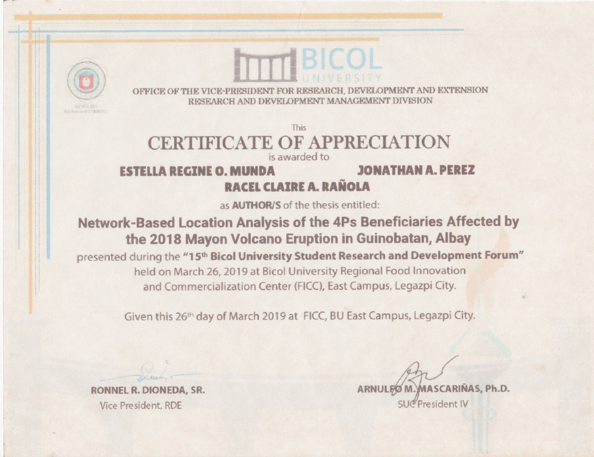

Welcome to My Portfolio
Hi, I'm ESTELLA REGINE O. MUNDA
Geodetic Engineer
Bachelor of Science in Civil Engineering
ABOUT ME
Watch this short introduction to learn more about my background, skills, and aspirations.
RESUME
EDUCATION
BS in Geodetic Engineering
Bicol University
Old Albay, Legazpi City
2014-2019
BS in Civil Engineering
FEU Alabang
Wood District, Corporate Woods cor.
South Corporate Avenues, Filinvest City, Muntinlupa
South Corporate Avenues, Filinvest City, Muntinlupa
2023-Present
KEY SKILLS / PROFICIENCY
Technical Skills
Land Surveying (GPS, Total Stations, Drones)
Geospatial Data Analysis (GIS & CAD Software)
Construction Site Inspection
Structural Design & Analysis
AutoCAD, Civil 3D, SketchUp, STAAD.Pro
Quantity Estimation & Cost Analysis
Soft Skills
Adaptability & Time Management
Problem Solving & Critical Thinking
Team Coordination
View Resume
Click to view or download the complete resume
Application Letter
View my professional application letter template
View Application Letter (PDF)Job Interview Guides
Tell me something about yourself
I am a licensed Geodetic Engineer and currently a second-year Civil Engineering
student at FEU Alabang. I have a background in land surveying, geospatial analysis,
and construction planning, with hands-on experience using GPS, total stations,
drones, and GIS software. I am also an active member of PICE and GEP, where I
continue to expand my knowledge through trainings and competitions. In my
previous roles, I have worked on topographic surveys, boundary mapping, and
infrastructure projects, collaborating with engineers, architects, and project
managers.
Why do you want to work in this industry?
I want to work in this industry because I enjoy building and improving
communities through engineering. As a Geodetic Engineer and Civil Engineering
student, I've seen how surveying, mapping, and construction come together to
create safe and efficient projects. This industry is fit for me because it allows me
to apply my skills, keep learning, and contribute to meaningful projects that help
people and the environment.
How have your education and professional experiences prepared you for this position?
My education and work experience have given me the skills needed for this role.
I have learned about surveying, mapping, construction planning, and structural
design. Through my internships and projects, I've gained hands-on experience in
land surveys, site inspections, and construction work. I have worked with GPS,
drones, total stations, and CAD software, which are important tools in this field.
Do you plan to continue your education?
Yes, I do. I plan to pursue a Master's degree in Geomatics Engineering,
specializing in Remote Sensing and Photogrammetry. This will help me gain
deeper knowledge in aerial mapping, satellite imaging, and geospatial data
analysis. I believe that advanced studies will allow me to improve my skills, keep
up with new technology, and contribute more to projects in land development
and infrastructure planning.
Who in your life has influenced you the most and why?
The person who has influenced me the most is my aunt, whom I call Mama. She is
a civil engineer, and growing up, I watched her work hard and overcome challenges
in her career. Seeing her dedication inspired me to follow the same path in
engineering. More than that, she has always supported me, provided for my needs,
and given me the love and care that shaped who I am today. She taught me the
value of hard work, perseverance, and passion. Because of her, I am motivated to
work hard and succeed in this field, hoping to make her proud one day.
Give me an example of a time when you were under stress to meet a deadline
There was a time when multiple projects piled up, and we had an upcoming document
inspection. Some files were still unsigned by the contractor, and some certifications and
bonds were incomplete. We only had a week to finalize everything and submit it to our
division chief at the construction division. It was a stressful situation, but with the help of
my colleagues, we organized the documents, followed up on missing requirements, and
made sure everything was complete. By working together and managing our time well, we
submitted everything on time. This experience taught me how to stay calm under pressure,
work well with a team, and handle tight deadlines efficiently.
MY WORKS
RESEARCH WORKS
NETWORK-BASED LOCATION ANALYSIS OF THE 4Ps BENEFICIARIES AFFECTED BY THE 2018 MAYON VOLCANO ERUPTION IN GUINOBATAN, ALBAY
Click to view or download PDF
WATER MASK USING ENHANCED THEMATIC MAPPER PLUS (ETM+) LANDSAT 7 IN TOPOGRAPHIC MONITORING (LAKE URMIA, IRAN)
Click to view or download PDF
PROPOSED TWO STOREY RESIDENTIAL BUILDING WITH ROOF DECK
Click to view or download PDF
EFFECTS OF SALINITY ON PLANTAE AND ESTUARY ANIMALS IN ARID AND SEMI-ARID REGIONS
Click to view or download PDF
CERTIFICATIONS
